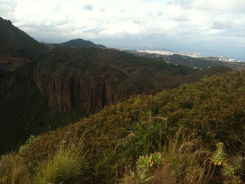

Circular de la Caldera
Itinerario circular que recorre el perímetro superior de la Caldera, en su mayor parte por sendero sobre picón con algunos cortos tramos de pista de tierra o carretera asfaltada. Es en general fácil con algún punto donde se requiere cierta atención por discurrir próximo a pendientes muy inclinadas o enriscadas que lo desaconsejan a personas con fobia las alturas y terrenos agrestes.
El itinerario comienza en las Casas de la Caldera y al ser circular puede hacerse en un sentido u otro. La opción elegida en este caso discurre en sentido inverso a las agujas del reloj: Desde el aparcamiento existente junto a la ermita se suben unos 150 m por la carretera GC802 a la Atalaya hasta la bifurcación de la carretera que por la izquierda conduce al Campo de Golf. Se continúa por esta última otros 150 m hasta una pista de tierra por la que continua (evitar la que a 250 m y por la izquierda conduce a una cancha de tenis) hasta su final en el Hotel Club Bandama 600 m.
Al borde de un pequeño prado de césped da comienzo el sendero de 2,1 km que discurre por todo el borde superior de la Caldera. Son 2,1 Km. que se recorren en 1hora aproximadamente. Tras un primer tramo de bajada con algunos metros algo inclinados se llega a la degollada sur, punto de menor altura de todo el borde superior del cráter, inicia la subida a lo alto del lomo de la Caldera, tras lo cual se alternan llanos con subidas y bajadas de escasa pendiente.
Precaucion en dos puntos: En el borde sur de la Caldera donde el sendero discurre a caballo de un lomo de picón muy estrecho y en la última bajada que lleva al pié de la falda SE del Pico de Bandama. En este último punto el sendero se divide en dos caminos paralelos a ambos lados de una hilera de pitas: Evitar el de la izquierda que se estrecha y acerca mucho al borde acantilado.
Por este amplio y cómodo camino se llega al final de la bajada al pié de la cara SE del Pico. Aquí se encuentra un cruce de caminos donde se ha de evitar el que baja a la derecha para seguir por el que a la izq. sube ladera arriba, entre vinagreras, hasta a la cerrada curva de la carretera GC288. Se continua ahora por esta carretera a la izq. bajando 500m mientras se disfruta de una completa visión del recorrido efectuado, de la Caldera y del estratificado talud, hasta llegar a las Casas de la Caldera fina y principio de este circular itinerario
Tiempo estimado:3 Horas